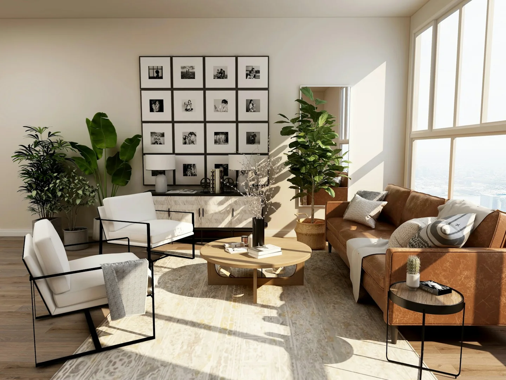
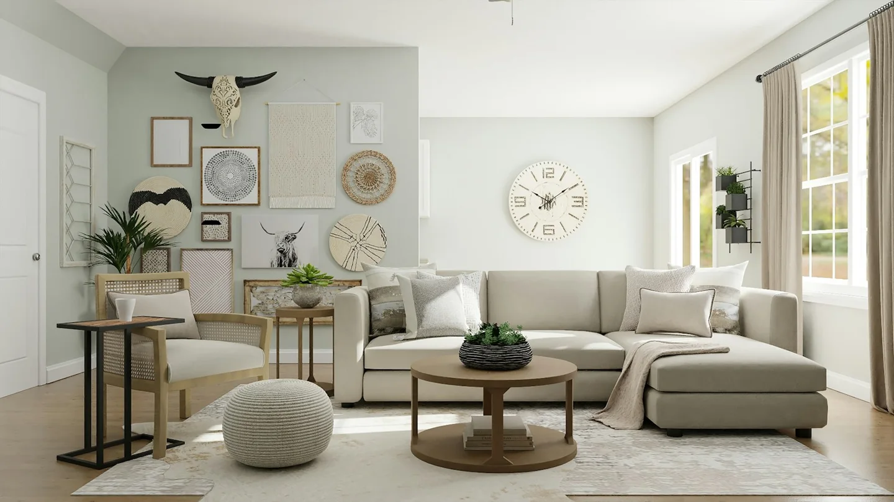

← All studiesARCHIVE / STUDY 05—06
CONCEPT STUDY / Interiors · 05
Majlis of Light
A contemporary majlis concept balancing gathering and repose. Warm light, soft finishes and measured proportions create a welcoming atmosphere.
SPATIAL NOTESHospitality / Warm light / Proportion
Imagined concept / Unbuilt. The following independently sourced photographs are mood and material references, not images of this proposed design or any completed work by Rehab Haider.



